Functional workflows
Screens connect across meaningful user tasks and business processes.
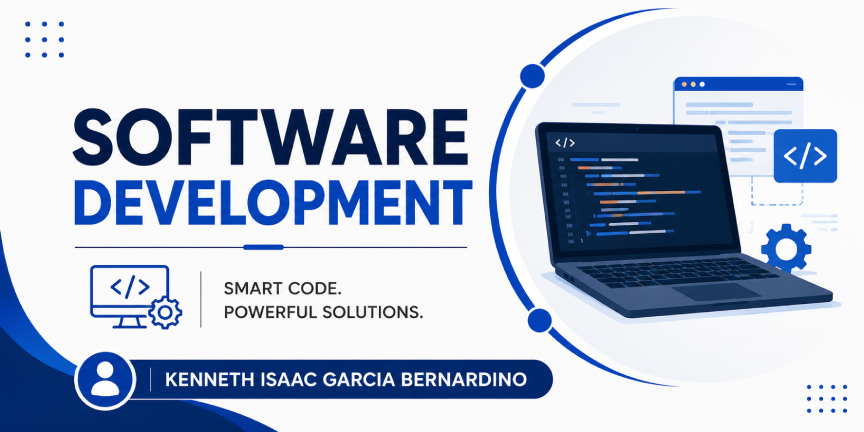
Selected application screens demonstrating practical development, structured workflows and user-focused features.
These samples show practical software delivery across authentication, products, appointments, dashboards and responsive interfaces. The screens demonstrate complete user journeys rather than isolated concepts.
Screens connect across meaningful user tasks and business processes.
Layouts keep common actions visible and easy to understand.
Samples include user, admin and supporting workflow views.
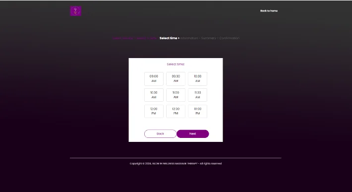
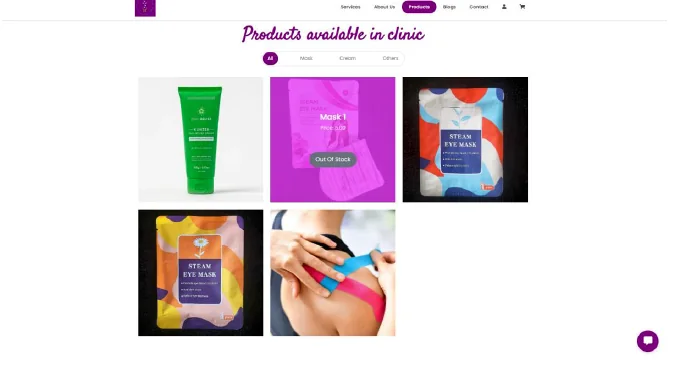
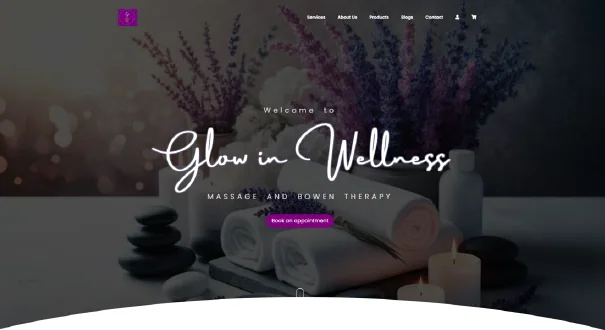
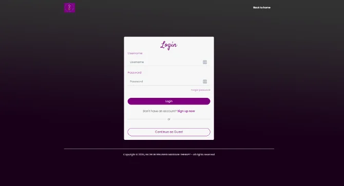
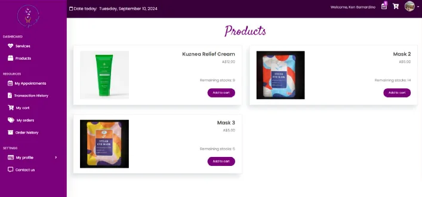
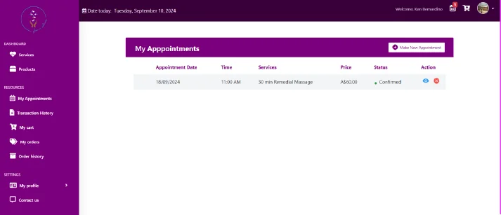
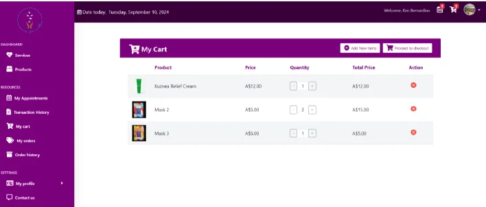
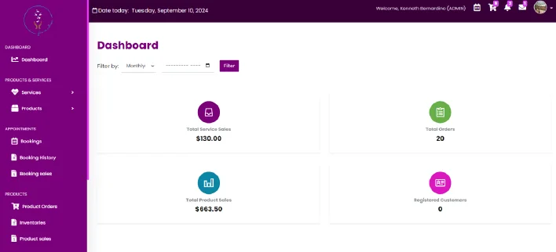
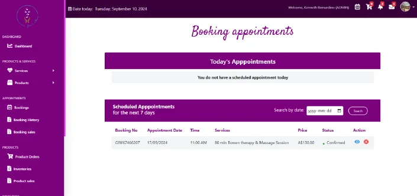
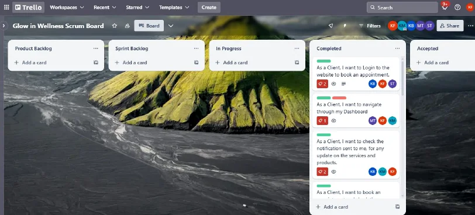
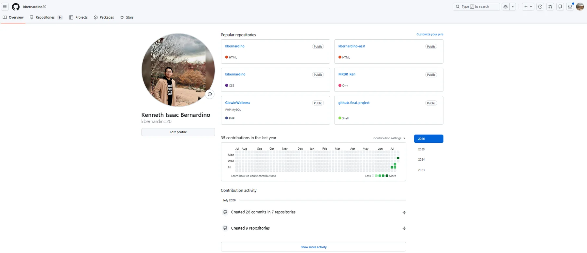
Browse the other work categories or review the résumé for professional experience, education and credentials.